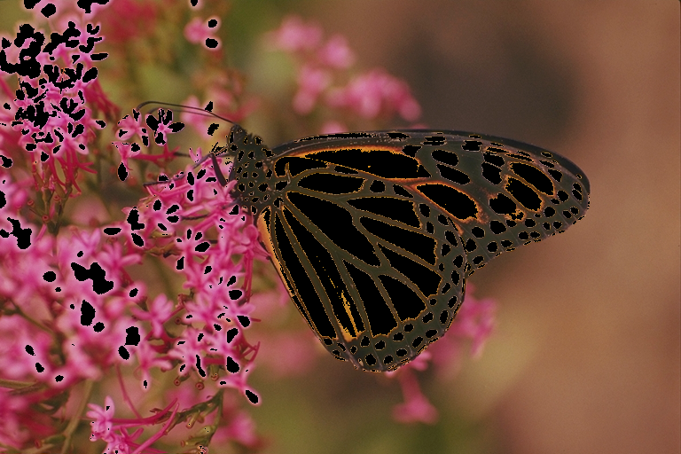
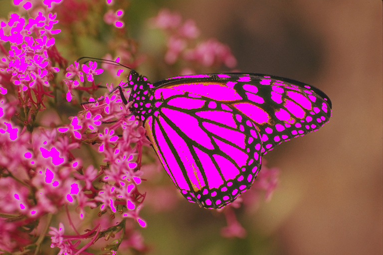
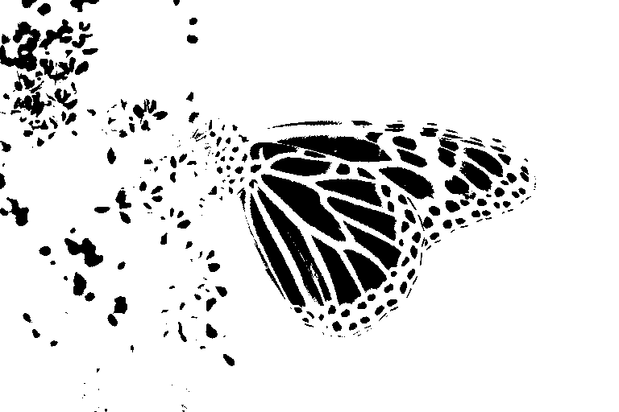

Export
ImageColorThresholderApp gui makes possible to export progress to workspace and file to do furthur analysis on images.
Export as function
After changing interval sliders as per use case, select Export button. It exports selection to workspace as function named image_color_threshold. image_color_threshold takes image, background color(optional) as inputs, if background color omitted it takes black as background color, it returns mask and thresholded image.
Without background color
mask, timg1 = image_color_threshold(img)
timg1
With backgound color(magenta)
mask, timg2 = image_color_threshold(img, RGB(1, 0, 1))
timg2
in both cases mask image is same
Gray.(mask)
Export code to file
Enter valid julia file path in Julia file path textbox then press enter, after select Export button. Export button exports selection to workspace and write as julia code in given file path. If julia file not exists at given location it creates automatically, if exists it overwrites file content.
Sample file path
/home/programs/export.jl
Sample exported code
function image_color_threshold(img::Matrix{RGB{T}}, bg=RGB(0.0,0.0,0.0)) where {T}
mask = map(img) do pix
_cnd = (0.0 <= getproperty(pix, :r) <= 1.0) && (0.5607843137254902 <= getproperty(pix, :g) <= 1.0) && (0.0 <= getproperty(pix, :b) <= 1.0)
!(_cnd)
end
new_img = deepcopy(img)
new_img[.!mask] .= bg
return (mask, new_img)
endExport as image
As previous mentioned export as function then
using FileIO
mask, timg = image_color_threshold(img)
# Save thresholded image
save("thresholded_image.png", timg)
# Save mask as image
save("mask.png", Gray.(mask))Export variables
JLD2 useful to export mask and thresholed image to JLD2 file which can be used in different julia sessions.
using JLD2
mask, timg = image_color_threshold(img, bg)
jldsave("export.jld2"; mask, timg)